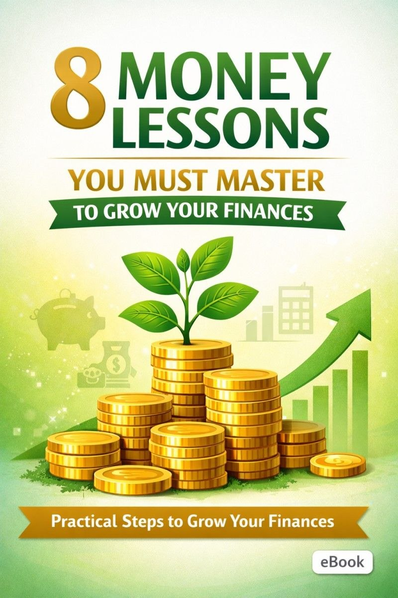
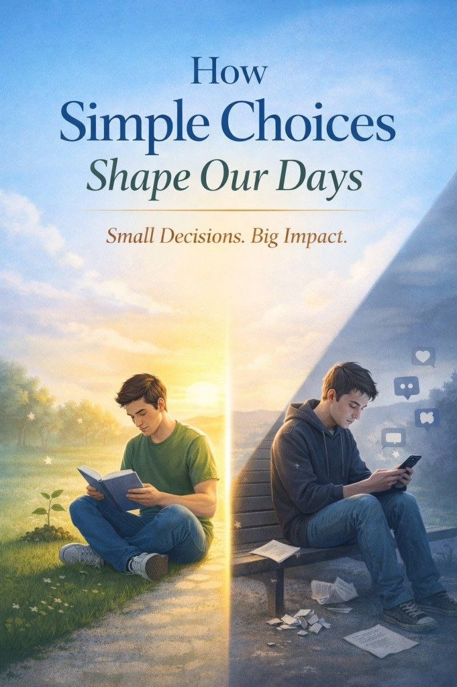
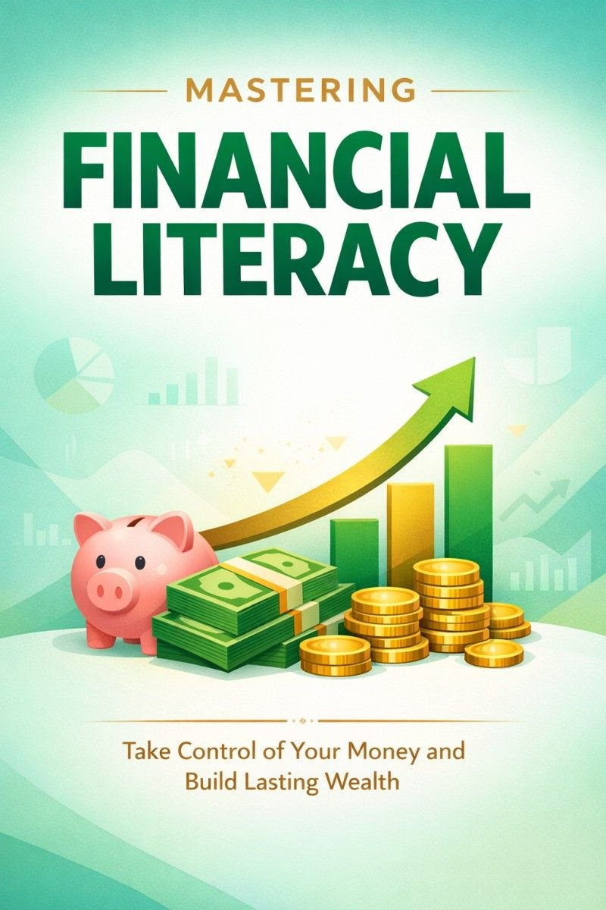
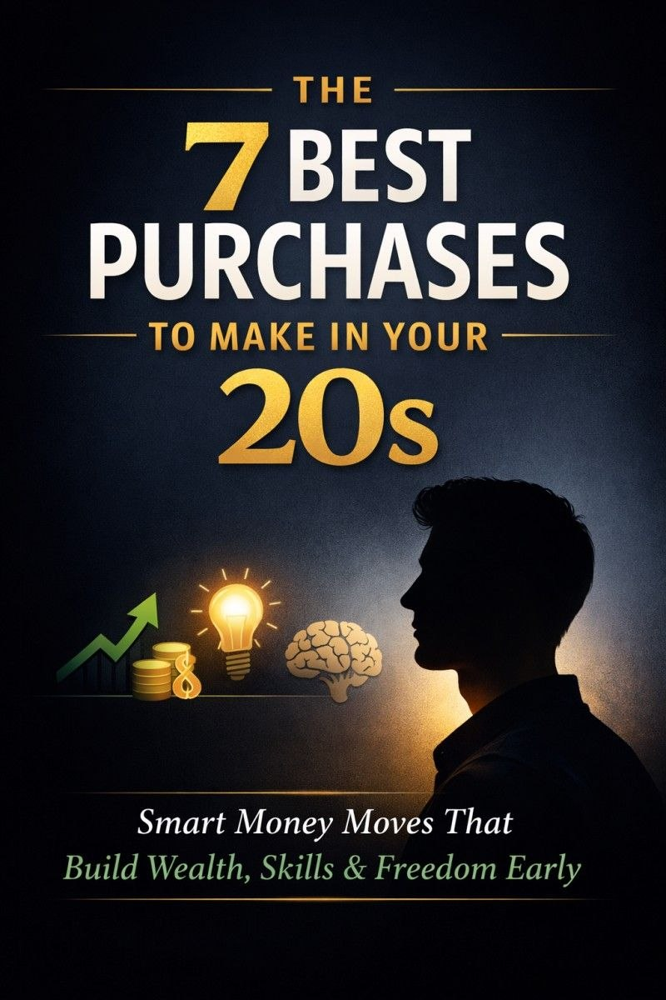

01
7 Assets You Should Own to Make Money
An educational resource exploring different types of assets and their potential role in building income and long-term financial value.
View on Selar →A selection of published educational resources developed to present practical subjects through clear, structured, and accessible written content.
01
An educational resource exploring different types of assets and their potential role in building income and long-term financial value.
View on Selar →02
An introductory resource designed to explain fundamental concepts and considerations involved in approaching cryptocurrency investing.
View on Selar →03
A practical resource examining skills that can be developed to create income opportunities and support personal and professional growth.
View on Selar →
04
An educational guide covering fundamental financial principles intended to support better money management and financial decision-making.
View on Selar →05
An educational resource examining the basic operations of banks and providing a clearer understanding of how the banking system works.
View on Selar →
06
A reflective written resource exploring how everyday decisions can influence routines, experiences, and the direction of our lives.
View on Selar →07
An educational resource examining the psychological factors, behaviours, and discipline involved in intraday trading.
View on Selar →08
A practical financial resource focused on money management, financial habits, and approaches to building greater financial awareness.
View on Selar →
09
A comprehensive educational resource covering foundational financial concepts and practical principles for developing financial literacy.
View on Selar →
10
A practical resource exploring purchases that can contribute to personal development, financial awareness, and long-term value during your 20s.
View on Selar →